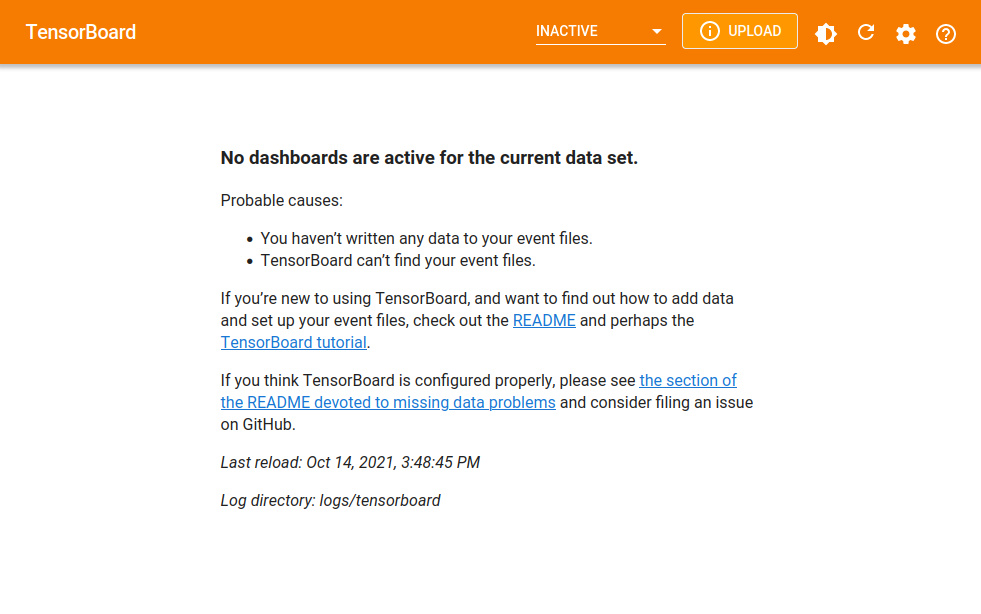
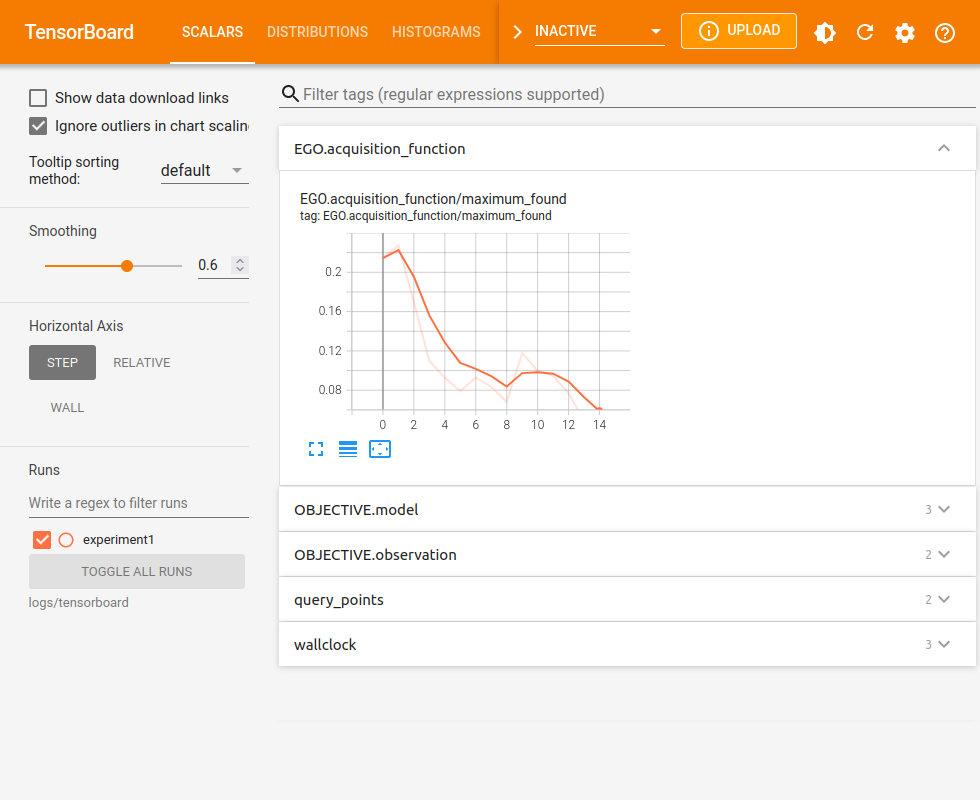
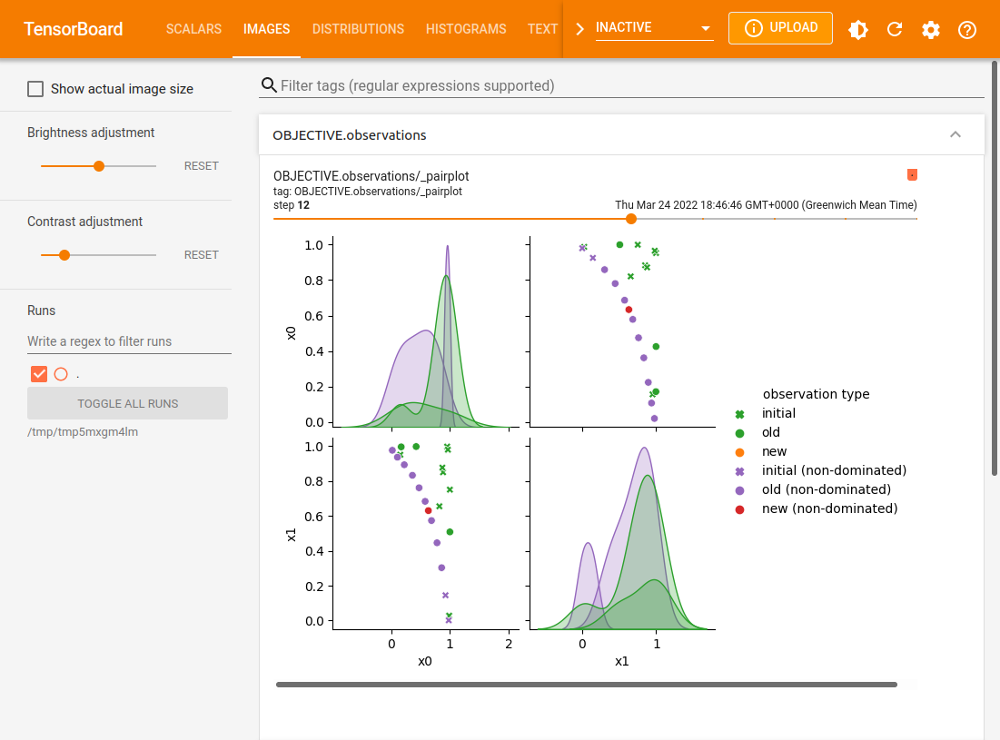
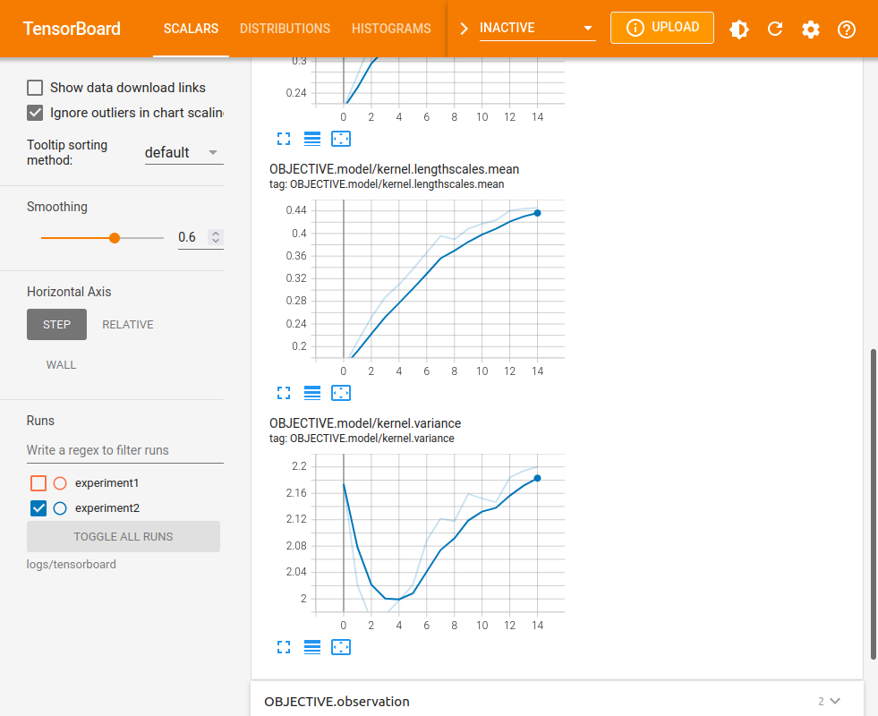
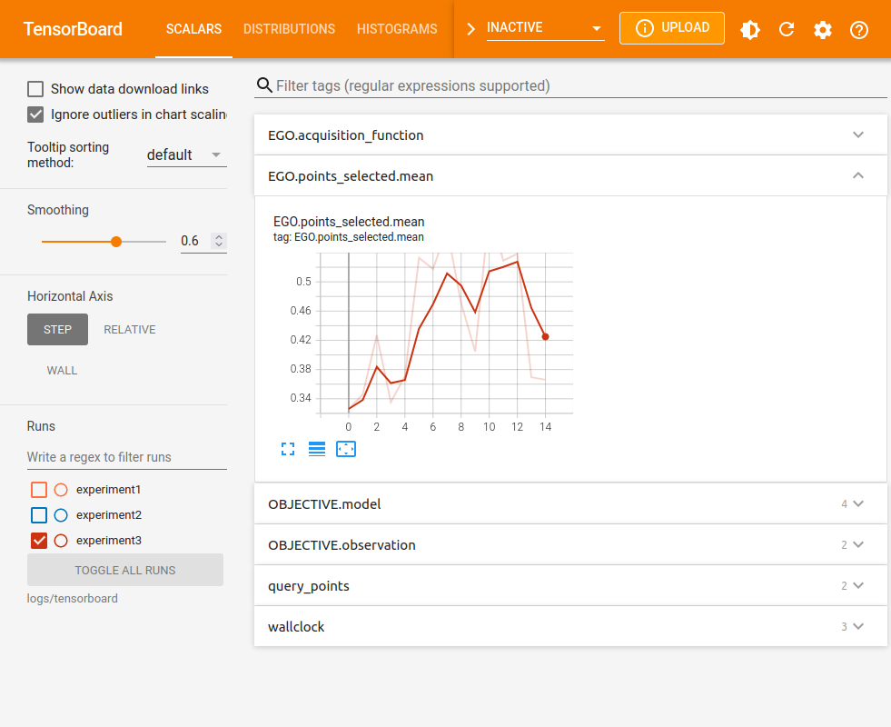

Visualizing with Tensorboard#
[1]:
import numpy as np
import tensorflow as tf
np.random.seed(1793)
tf.random.set_seed(1793)
We often wish to track or visualize the Bayesian optimization process, either during and following execution. This tutorial shows how to do this using the TensorBoard visualization toolkit. By default we keep track of evolution of the found minimizer and report timings for key parts of each optimization step.
Set up the problem#
For this tutorial, we’ll use the same set up as before.
[2]:
import trieste
search_space = trieste.space.Box([0, 0], [1, 1])
observer = trieste.objectives.utils.mk_observer(
trieste.objectives.ScaledBranin.objective
)
initial_query_points = search_space.sample_sobol(5)
initial_data = observer(initial_query_points)
gpr = trieste.models.gpflow.build_gpr(initial_data, search_space)
model = trieste.models.gpflow.GaussianProcessRegression(gpr)
Setting up TensorBoard#
Before running the optimization loop, we decide where TensorBoard summary logs should be stored, and set a summary writer to do this.
[3]:
# Clear any logs from previous runs
!rm -rf logs/tensorboard
summary_writer = tf.summary.create_file_writer("logs/tensorboard/experiment1")
trieste.logging.set_tensorboard_writer(summary_writer)
We can now also load the TensorBoard extension, though at this point there will not be any data to dispay. To run this notebook locally, remove the %%script line.
[4]:
%%script echo Loading TensorBoard...
%load_ext tensorboard
%tensorboard --logdir "logs/tensorboard"
Loading TensorBoard...

Running and tracking the Bayesian Optimizer#
By setting the summary writer, we tell Trieste to log relevant information during optimization. While the optimization is running, we can refresh TensorBoard to see its progress.
[5]:
num_steps = 15
bo = trieste.bayesian_optimizer.BayesianOptimizer(observer, search_space)
result, history = bo.optimize(num_steps, initial_data, model).astuple()
Optimization completed without errors
The data remains available when the optimization is over.

In addition to these scalar plots, there may also be histograms, textual metadata and image plots.
Deciding what to log#
When monitoring is enabled, Trieste decides what information is interesting enough to log. This includes objective and acquisition function values, query points, and some model parameters (note that model logs start at step 0 if models are fit to the initial data, i.e. fit_initial_model=True). Some data summaries, such as query point pairplots, are not generated by default as they can affect running time. You can control which summaries to generate and display by overriding the default
summary filter. By default this shows any summary apart from those whose name starts with an underscore character.
[6]:
trieste.logging.set_summary_filter(lambda name: True) # enable all summaries
Furthermore, some summaries such as pairplots also require special plotting tools, which can be installed by running pip install trieste[plotting]. A warning message will be printed if you try to generate a summary without the necessary tools.

Logging additional model parameters#
Where trieste’s monitoring is insufficient, you can also add your own logs. To log additional model parameters, you can define your own model subclass and override the log method. You can use the various tf.summary method wrappers in trieste.logging to ensure that your logs are filtered correctly. For example, the following GPR subclass also logs the average lengthscale at each step. Note that dataset argument is required, but here it is unused - one could use it to log
additional data-based model summary statistics.
[7]:
class GPRExtraLogging(trieste.models.gpflow.GaussianProcessRegression):
def log(self, dataset):
super().log(dataset)
summary_writer = trieste.logging.get_tensorboard_writer()
if summary_writer:
with summary_writer.as_default(
step=trieste.logging.get_step_number()
):
trieste.logging.scalar(
"kernel.lengthscales.mean",
np.mean(self.get_kernel().lengthscales),
)
model = GPRExtraLogging(gpr)
Running with this model now also produces logs for the mean lengthscale. We mark this optimization run as a separate experiment by creating a new summary writer. Tensorboard will conveniently offer an automatic comparison of the experiments.
[8]:
summary_writer = tf.summary.create_file_writer("logs/tensorboard/experiment2")
trieste.logging.set_tensorboard_writer(summary_writer)
bo = trieste.bayesian_optimizer.BayesianOptimizer(observer, search_space)
result, history = bo.optimize(num_steps, initial_data, model).astuple()
Pairplot TensorBoard summaries require seaborn to be installed.
One way to do this is to install 'trieste[plotting]'.
Optimization completed without errors

Logging additional acquisition rule metrics#
Similarly, it is possible to log additional metrics connected to the acquisition rule by overriding rule’s acquire method (or any other method used while evaluating the rule). For example, the following class also logs the mean coordinates of the selected points:
[9]:
class EGOExtraLogging(trieste.acquisition.rule.EfficientGlobalOptimization):
def acquire(self, search_space, models, datasets=None):
points = super().acquire(search_space, models, datasets)
summary_writer = trieste.logging.get_tensorboard_writer()
if summary_writer:
with summary_writer.as_default(
step=trieste.logging.get_step_number()
):
trieste.logging.scalar(
"EGO.points_selected.mean", tf.math.reduce_mean(points)
)
return points
summary_writer = tf.summary.create_file_writer("logs/tensorboard/experiment3")
trieste.logging.set_tensorboard_writer(summary_writer)
bo = trieste.bayesian_optimizer.BayesianOptimizer(observer, search_space)
result, history = bo.optimize( # type: ignore
num_steps, initial_data, model, acquisition_rule=EGOExtraLogging()
).astuple()
Pairplot TensorBoard summaries require seaborn to be installed.
One way to do this is to install 'trieste[plotting]'.
Optimization completed without errors

Using Tensorboard with Ask-Tell Optimization#
To use Tensorboard logging with the Ask-Tell interface, you must also explicitly set the optimization step number before calling ask or tell methods. If fitting the model on initialization of the Ask-Tell interface (default), then you must also set the optimization step number before initializing the interface to log initial model fitting as a different step.
[10]:
summary_writer = tf.summary.create_file_writer("logs/tensorboard/experiment4")
trieste.logging.set_tensorboard_writer(summary_writer)
trieste.logging.set_step_number(0)
ask_tell = trieste.ask_tell_optimization.AskTellOptimizer(
search_space, initial_data, model
)
for step in range(1, num_steps + 1):
trieste.logging.set_step_number(step)
new_point = ask_tell.ask()
new_data = observer(new_point)
ask_tell.tell(new_data)
Pairplot TensorBoard summaries require seaborn to be installed.
One way to do this is to install 'trieste[plotting]'.